「なんかアゴ長くない？」と言われた28歳男性→3歳の時は…… まさかの姿が843万再生「人変わってるだろ」「これ加工じゃないの？」
ねとらぼ · 11 Nov · @agonagasugi_ ♥60,794
ねとらぼ · 11 Nov · @agonagasugi_ ♥60,794
Excite エキサイト · 11 Nov
 670万回
NEW
670万回
NEW
Yahoo!ニュース · 10 Nov · @leon_okayama ♥130,253
ねとらぼ · 10 Nov · @leon_okayama ♥130,253
 525万回
525万回
Excite エキサイト · 10 Nov
 306万回
306万回
Excite エキサイト · 10 Nov
 300万回
300万回
PR TIMES · 10 Nov · @i_house.8 ♥38,353
Yahoo!ニュース · 11 Nov
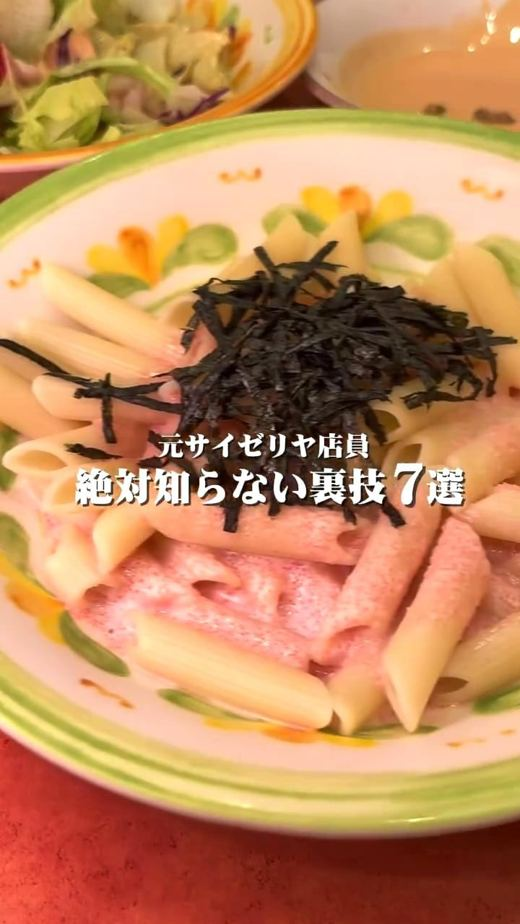
136万回オリコンニュース · 10 Nov
ライブドアニュース · 10 Nov
 28万回
28万回
Excite エキサイト · 10 Nov
 22万回
22万回
Excite エキサイト · 10 Nov
 10万回
10万回
Excite エキサイト · 10 Nov
 NEW
NEW

PR TIMES · 10 Nov · @riiinodesu ♥1,484
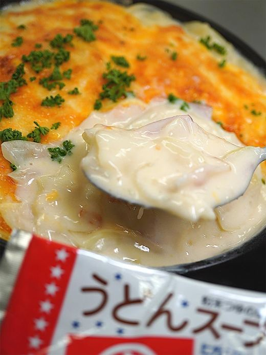
NEWInfoseek · 11 Nov
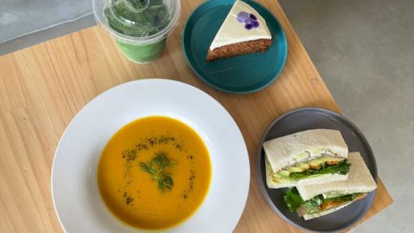
NEWEDITORS SAGA · 11 Nov
ViVi · 11 Nov
 NEW
NEW
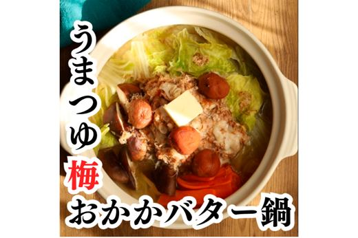
NEWLASISA · 11 Nov
 NEW
NEW
東洋経済オンライン · 11 Nov
MEN'S NON-NO WEB · 11 Nov
LIMO | くらしとお金の経済メディア · 11 Nov
ｄメニューニュース · 11 Nov
めざましmedia · 11 Nov
クランクイン！ · 10 Nov
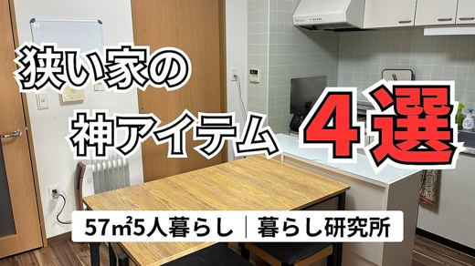
NEWライブドアニュース · 11 Nov
ヨムーノ · 11 Nov
grapee.jp · 11 Nov
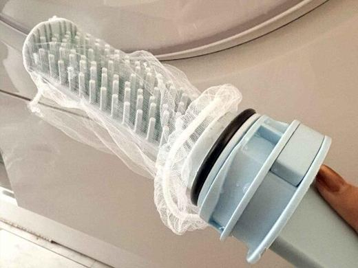
NEWｄメニューニュース · 11 Nov
All About ニュース · 11 Nov
All About ニュース · 11 Nov
ケンコーマヨネーズ株式会社のプレスリリース 関東ダイエットクックは、「チーズの日」である本日より『チーズに溺れるもっちり生パスタ
メゾンカカオ株式会社のプレスリリース 鎌倉発祥のチョコレートブランド「メゾンカカオ」（創業者：石原紳伍）は、2026年11月14
株式会社Cake.jpのプレスリリース ケーキ・スイーツ専門通販サイト「Cake.jp（ケーキジェーピー）」を運営する株式会社C
株式会社アンドエスティHDのプレスリリース ガーナチョコレートを贅沢に使用した限定ドリンク2種＆ニコパンが登場！心温まる冬のカフ
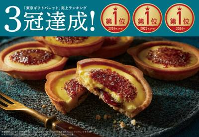
11/11 11:00 🗼 東京株式会社グレープストーンのプレスリリース 株式会社グレープストーン(本社：東京都中央区銀座)の、“ブリュレ”がテーマのスイーツブ
森永製菓株式会社のプレスリリース 森永製菓株式会社（東京都港区芝浦、代表取締役社長 COO・森 信也）は、森永甘酒シリーズより
ボンディッシュ株式会社のプレスリリース ～限定メニュー全11種公開＆11月11日(水)より事前予約開始～ “おいしい一皿で絆を
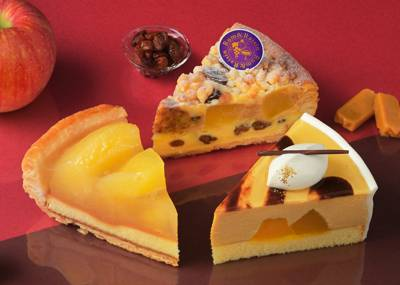
11/11 10:00 🗼 銀座株式会社銀座コージーコーナーのプレスリリース 「キャラメルりんごケーキ」「ラムレーズンアップルパイ」も季節限定で登場！ 株式会社
有限会社 豊国のプレスリリース 井戸の硬水と長期栽培が育む、自然な甘さ、ぱりぱりの歯ごたえ、ほのかなナッツの香り。半世紀以上の技
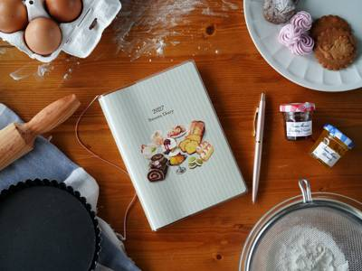
11/11 18:07 🌐 全国株式会社SweetsLinkのプレスリリース レシピノートではなく、ただのスケジュール帳でもない。お菓子作りを通して人生を豊かに
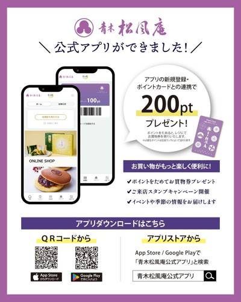
11/11 18:00 ❓ 不明青木松風庵のプレスリリース リリース記念としてアプリダウンロードで200ポイントをプレゼント 株式会社青木松風庵（本社：大阪府阪
株式会社グローバルプロダクトプランニングのプレスリリース 自分へのプチご褒美にも、お世話になった方への贈り物にも。3包・6包のメ
サントリービバレッジ＆フード株式会社のプレスリリース 呪力をイメージした「ＺＯＮｅ ＥＮＥＲＧＹ ＭＡＸＩＭＵＭ ＣＵＲＳＥ」を
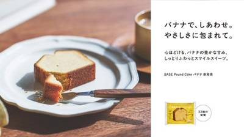
11/11 16:00 ❓ 不明ベースフード株式会社のプレスリリース 〜バナナで、しあわせ。やさしさに包まれて。心ほどける、バナナの豊かな甘み、しっとりふわっと
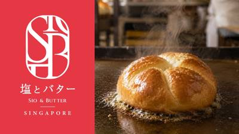
11/11 16:00 ❓ 不明株式会社八天堂のプレスリリース ～シンガポールの食文化に出合う、「バクワ」「コピ・オー」など新メニューが多数登場～ 株式会社Ha
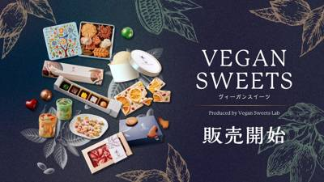
11/11 15:00 🚄 淡路島株式会社パソナグループのプレスリリース 夕陽100選に選ばれた淡路島西海岸に広がる壮大な海を一望できるシーサイドレストラン＆マー
２０２６年１１月１３日（金）新発売 ミニストップは、ファストフードの新作スナックを２品、２０２６年１１月１３日（金）より、国内の
２０２６年１１月１３日（金）新発売 ミニストップは、福岡県産「あまおう®※1いちご」を使用したソフトクリームに、果肉がしっかり感
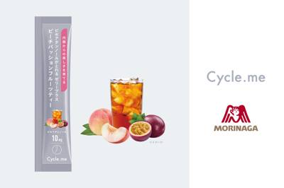
11/11 15:00 ❓ 不明株式会社ドットミーのプレスリリース ～ピーチパッションフルーツティーの上品な甘さと華やかな香りで、おいしく続ける美容習慣を提案～
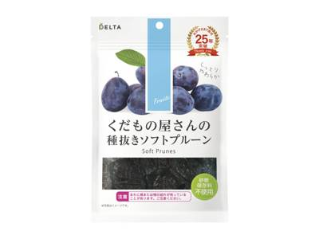
11/11 14:30 ❓ 不明株式会社デルタインターナショナルのプレスリリース 長年愛され続けるおいしさとともに、「朝にうれしい、プルーン習慣」を提案 株式会
西日本旅客鉄道株式会社のプレスリリース ～ドクターイエローと発売50周年を迎える「雪の宿」が夢のコラボレーション～ ジェイアー
カネテツデリカフーズ株式会社のプレスリリース カネテツデリカフーズ株式会社（本社：兵庫県神戸市、代表取締役社長：村上 寛）は、創
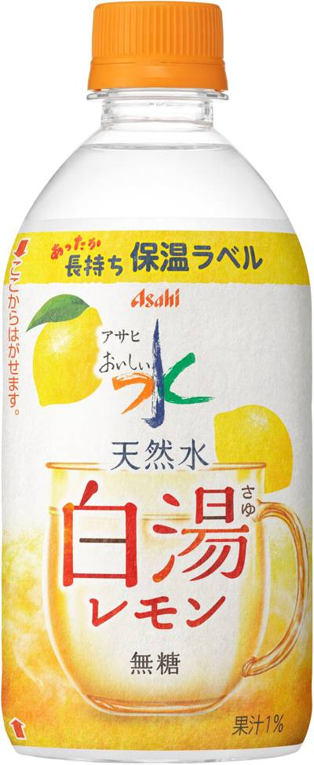
11/11 14:00 🌐 全国アサヒ飲料株式会社のプレスリリース 「白湯」で初めてレモン果汁を使用 アサヒ飲料株式会社（本社 東京、社長 近藤佳代子）は、『
カッパ・クリエイト株式会社のプレスリリース ２０２６年１１月２６日（木）より、かっぱ寿司全店にて販売開始 コロワイドグループの
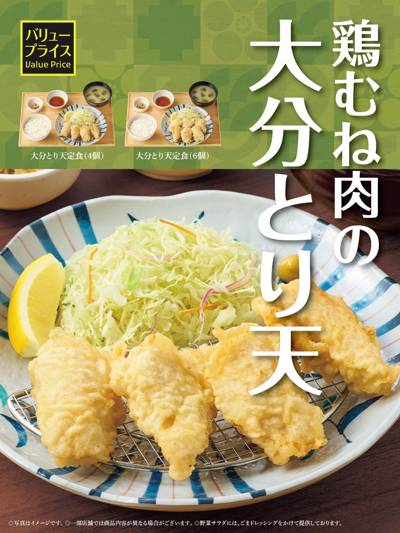
11/11 13:00 🚄 大分株式会社プレナスのプレスリリース 11.17(火)から発売 株式会社プレナスは、定食レストラン「やよい軒」を、日本国内にて10
株式会社麺食のプレスリリース 「喜多方ラーメン坂内」をはじめ国内外で多様なジャンルの飲食店事業を手掛ける株式会社麺食(本社： 東
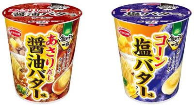
11/11 12:00 🌐 全国エースコック株式会社のプレスリリース じんわりとろけるバターの風味が寒い冬にぴったり！後入れのバター状ブロックで仕上げる「飲み干
～ 過去最多 全国60校169商品の頂点に。初出場で日本一 ～ 愛知県豊橋市梅藪町のつくだ煮専門店ブランド「美食倶楽部」を運営す
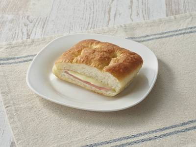
11/11 11:30 ❓ 不明株式会社セブン‐イレブン・ジャパンのプレスリリース ～累計100億杯を突破の『セブンカフェ』とのフードペアリングも～ 株式会社
株式会社三洋産業のプレスリリース ～大分・別府の豊かな恵みを、愛犬と同じメニューで一緒に味わう、特別なひとときをお届け～ 株式会
株式会社DAY TO LIFEのプレスリリース 株式会社DAY TO LIFE（本社：大阪府大阪市北区、代表取締役：杉内健吉）が
アイビーカンパニー株式会社のプレスリリース 全国のファミリーマートから、11月17日（火）より順次発売 アイビーカンパニー株式会
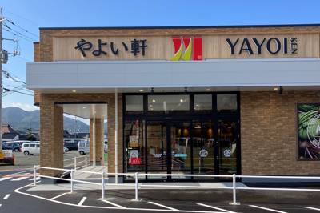
11/11 11:00 🚄 山口株式会社プレナスのプレスリリース 11.12(木)10時～ 株式会社プレナスは、定食レストラン「やよい軒」を、2026年10月
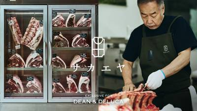
11/11 11:00 🚄 滋賀株式会社ウェルカムのプレスリリース 新保吉伸さん率いる滋賀県の精肉店『サカエヤ』。温めるだけ本格的な味わいがたのしめる贅沢な肉料
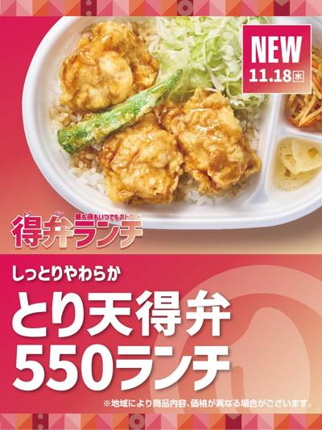
11/11 11:00 ❓ 不明株式会社プレナスのプレスリリース 11.18(水)より新発売 株式会社プレナスは、持ち帰り弁当の「Hotto Motto (ほっ
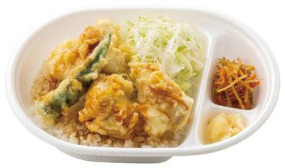
11/11 11:00 ❓ 不明ほっともっとのプレスリリース 株式会社プレナスは、持ち帰り弁当の「Hotto Motto (ほっともっと)」を、2026年10月
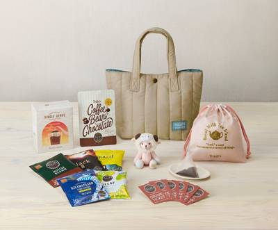
11/11 11:00 ❓ 不明タリーズコーヒージャパン株式会社のプレスリリース 未（ひつじ）年の干支ミニテディ、持ち運び便利なモバイルボトルなど限定アイテム入
キリンホールディングス株式会社のプレスリリース キリンビバレッジ株式会社（社長 井上一弘）は、紅茶飲料売上本数No.1ブランド
スターバックスコーヒージャパン株式会社のプレスリリース スターバックス コーヒー ジャパン 株式会社（本社所在地：東京都品川区、
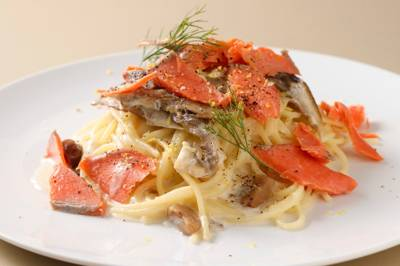
11/11 10:40 ❓ 不明株式会社ブロードエッジ・アドバイザーズのプレスリリース 季節食材をふんだんに使用したスイーツを数多く生み出してきたデリーモから、
株式会社ポルテ・ボヌールのプレスリリース 愛らしい猫のうしろ姿にキュートな耳、厳選素材で作る贅沢な味わい。おうちクリスマスを華や
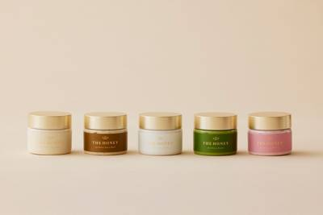
11/11 10:30 ❓ 不明日新蜂蜜株式会社のプレスリリース 11月11日より予約販売開始 日新蜂蜜株式会社(本社：岐阜県安八郡安八町、代表取締役社長：岸野
株式会社オールハーツ・カンパニーのプレスリリース ～全国の#C-pla（シープラ）にて2026年12月上旬より順次販売開始～ 株
いなば食品株式会社のプレスリリース ツナの旨味とコーンの甘みが引き立つ絶妙なバランス。朝食やお弁当づくりに忙しい子育て世代に嬉し
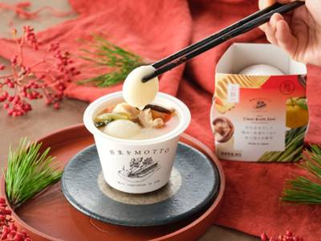
11/11 10:00 🚄 静岡柚子の香りと鶏の旨みを高め、レンジで楽しむ本格お雑煮がさらにおいしく モンマルシェ株式会社(静岡県静岡市)が展開するフードブラン
株式会社ミンテルジャパンのプレスリリース 英国で健康管理に機能性食品・飲料を使う人の54%は運動トラッカーを利用し、37%はダイ
イオン株式会社のプレスリリース ～春雨と中華麺、お好みの麺で楽しめるアジアングルメ～ イオングループのオリジン東秀株式会社（本社
ＵＨＡ味覚糖株式会社のプレスリリース UHA味覚糖株式会社（本社：大阪市中央区、代表取締役：山田泰正）は、サプリメントブランド
株式会社メリーチョコレートカムパニーのプレスリリース 11月20日（金）18:00より蔦屋書店オンラインストアにて先行予約開始
シャインマスカット・りんご・みかんのパフェを順次発売 11月下旬には温もりテラス席も完成予定 熊本市北区植木町で年間を通じて多品
株式会社資さんのプレスリリース お世話になった方へ『資さんの冬ギフト』を贈りませんか？ 11/11（水）～販売スタート！ 資さ
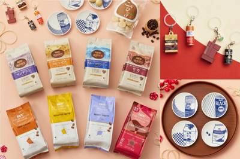
11/11 09:00 🚄 兵庫UCC上島珈琲株式会社のプレスリリース UCCミルクコーヒー等の「めじるしガチャマスコット」や「神戸タータンデザインオリジナルバ
株式会社久原本家のプレスリリース 久原本家グループ（福岡県糟屋郡久山町 社主：河邉 哲司）の、「茅乃舎だし」など和風調味料を販
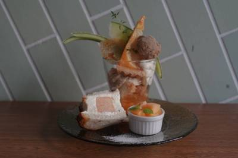
11/11 17:50 🚄 青森青森県つがる市のプレスリリース ■人気の「メロンと紅茶のパフェ」をミニサイズで楽しめる新メニュー■フルーツサンド、バスクチーズケ
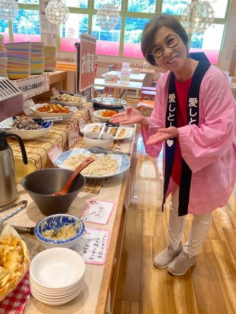
11/11 16:36 🚄 佐賀株式会社愛しとーとのプレスリリース コラーゲンゼリーの「愛しとーと」のレストラン『愛しとーとごはん』では、体に優しいこだわりのメ
株式会社 With Pet Familyのプレスリリース 2026年11月12日（木）～11月30日（月）の平日限定！注文時にサ
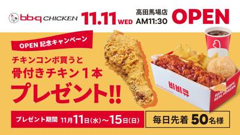
11/11 10:30 🗼 東京ワタミ株式会社のプレスリリース オープンを記念して、11月15日（日）まで毎日先着50名様限定チキンコンボご購入で骨付きチキン1
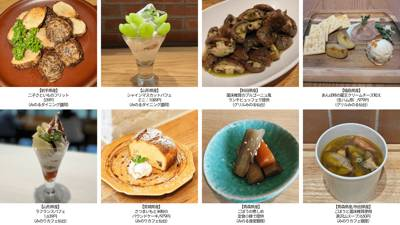
11/11 15:00 🚄 東北みのりみのるプロジェクトのプレスリリース 東北を丸ごと味わう！食べて知って東北応援！ ＪＡ全農は、全国の直営飲食店舗（５店舗）
株式会社Green Micro Factoryのプレスリリース 11月27日（金）～29日（日）の3日間限定。オリジナルバーガー
Core-Business株式会社のプレスリリース 11月13日から11月30日まで！厚切りステーキや贅沢ローストビーフで楽しむ
チムニー株式会社のプレスリリース チムニー公式InstagramとXで11月11日(水)より応募受付開始！合計30名様にキリン一
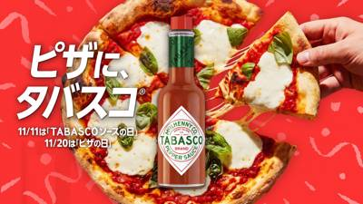
11/11 11:00 ❓ 不明McIlhenny Companyのプレスリリース クリエイター10人と、ピザとTABASCO®ソースで日常にスパイスをプラスす
スタディプラス株式会社のプレスリリース 〜受験の多様化が進む中、中高生を栄養面から応援〜 スタディプラス株式会社（本社：東京都千
株式会社ブランジスタのプレスリリース 合計100名様に受賞商品が当たるプレゼントキャンペーンも開催 株式会社ブランジスタメディア
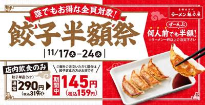
11/11 10:30 🌐 全国株式会社SAKIGAKEホールディングスのプレスリリース 2026年11月17日(火)～2026年11月24日(火)まで「餃子半
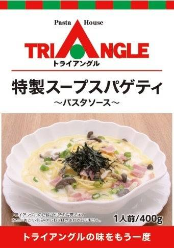
11/11 10:00 ❓ 不明JR東日本東北総合サービス株式会社のプレスリリース ～「また食べたい！」の声にお応えして、再びあの味をご家庭に～ JR東日本東
イオン株式会社のプレスリリース ～オーガニックの産地訪問ツアーが当たる抽選企画や限定商品など多彩な企画を実施～ ビオセボン・ジャ
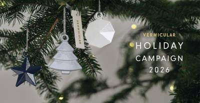
11/11 09:30 🚄 愛知愛知ドビー株式会社のプレスリリース -11/18（水）より、バーミキュラ ホリデーキャンペーン2026開催- 愛知ドビー株式会社
株式会社NSグループのプレスリリース 開催期間：2026年11月13日（金）～11月30日（月）開催店舗：カラオケパセラ新宿靖国
株式会社わかさいも本舗のプレスリリース 11月11日（水）までの予約受付が予定数量に達し11月5日（木）に早期終了。11月14日
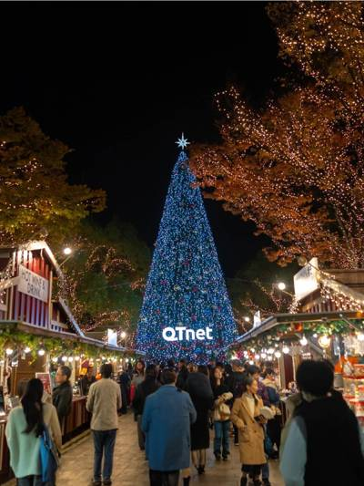
11/11 18:18 ❓ 不明株式会社Mr.Weihnachtsmannのプレスリリース ■ 開催概要 QTnet presents 光のフォレスト 開催期間
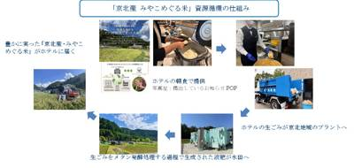
11/11 16:30 🚄 京都株式会社西武・プリンスホテルズワールドワイドのプレスリリース SDGsの取り組みがおいしい朝ごはんになりました。 ザ・プリンス
株式会社物語コーポレーションのプレスリリース 全国で372店舗展開中の『焼肉きんぐ』は、2026年12月9日(水)から2027年
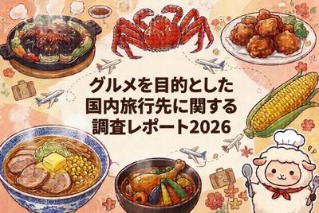
11/11 09:59 ❓ 不明株式会社物語コーポレーションのプレスリリース 株式会社物語コーポレーション（本社：愛知県豊橋市、代表取締役社長：加藤 央之）は、
 11/12 08:49
🗼 東京
11/12 08:49
🗼 東京
ネッスー株式会社のプレスリリース 「未利用食品の活用推進コンソーシアム」設立発表から約5カ月で、参画する食品メーカーは8社から1
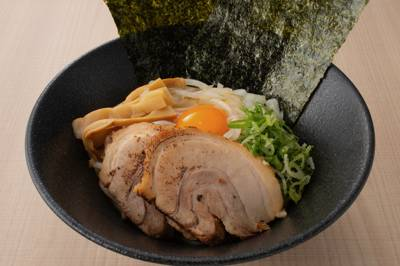
11/11 19:20 🗼 東京株式会社YOKOYAMAのプレスリリース オープンから3日間（11月12日〜14日）、王道まぜ麺が半額の450円（各日100食限
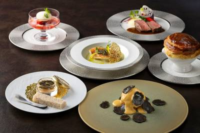
11/11 16:05 🗼 東京株式会社 東京ドームホテルのプレスリリース キャビアと黒トリュフを前菜からメインディッシュまでふんだんに。大切な記念日のひととき
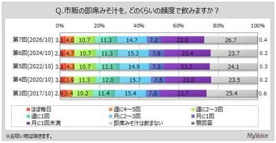
11/11 15:10 🗼 東京マイボイスコム株式会社のプレスリリース ＜＜ TOPICS ＞＞ ■市販の即席みそ汁を飲む人は7割強。よく飲むタイプは、個包装・
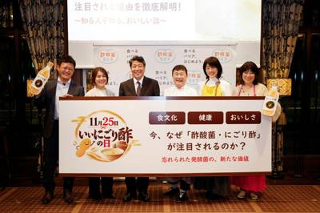
11/11 15:00 🗼 東京酢酸菌ライフのプレスリリース ～乳酸菌とは異なる特徴から、「昆布だしいらず」の意外なおいしさまで～ 「酢酸菌ライフ」は11月10
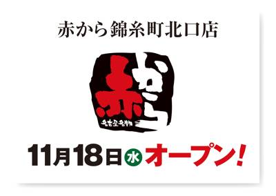
11/11 14:35 🗼 錦糸町株式会社甲羅のプレスリリース コクのある旨みとクセになる辛さの「赤から鍋」が看板メニュー 株式会社甲羅（本社：愛知県豊橋市、代表
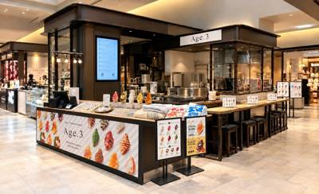
11/11 14:16 🗼 麻布株式会社ANCHORのプレスリリース 2026年11月11日（水）〜17日（火）、麻布台ヒルズ マーケットに期間限定POP-UP
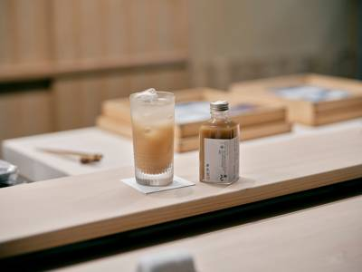
11/11 14:13 🗼 東京孝芳堂株式会社のプレスリリース 鮨の食体験をさらに豊かにするジンジャーエールを5つの国・地域・14店舗へ展開。オンラインストアで
株式会社ANCRのプレスリリース 東急株式会社と株式会社ANCRの協業によるカフェラウンジ「Nakaniwa」に、Shibuya
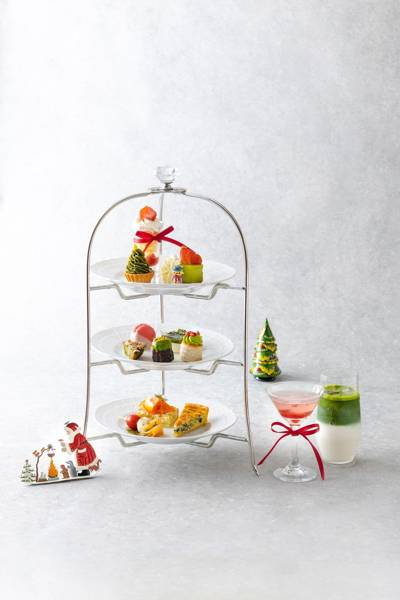
11/11 12:43 🗼 銀座TZEN株式会社のプレスリリース 赤と緑に彩られたデザート8品とセイボリー3品。苺のウェルカムドリンクと選べるドリンク2杯を添え
株式会社クラウディアコスチュームサービスのプレスリリース 東京・飯田橋のフレンチレストラン「ソンブルイユTOKYO」が贈る、華や
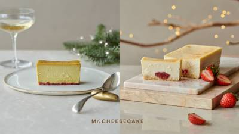
11/11 12:00 🗼 東京株式会社 Mr. CHEESECAKEのプレスリリース 株式会社Mr. CHEESECAKE（本社：東京都港区、代表取締役CCO
株式会社ローソンストア１００のプレスリリース 株式会社ローソンストア100（東京都品川区）が運営する「ローソンストア100」（
株式会社ニュー・オータニのプレスリリース 11/16（月）販売開始。”食のニューオータニ”が、大切な人と集う時間を後押し！ ホテ
ワタミ株式会社のプレスリリース WATAMI FAST CASUAL MANAGEMENT株式会社（本社：東京都大田区）が展開
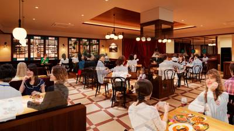
11/11 11:00 🗼 横浜株式会社GRACEのプレスリリース 〜 何度も寄港したくなる、なつかしの洋食。横浜ゆかりの味からレトロな一杯まで 〜 横濱洋食
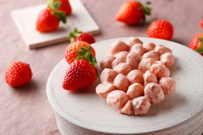
11/11 11:00 🗼 横浜リゾートトラスト株式会社のプレスリリース THE KAHALA Collectionにて、2026年11月19日（木）より数量限
株式会社ツカダ・グローバルホールディングのプレスリリース 2026年11月13日（金）～販売スタート／ St. GRACE Lo
株式会社 銀座木村家のプレスリリース 五色あんぱんも12月は約1.5倍に。日持ち5日でも、年末のおもたせにお選びいただいています
ヒューリックホテルマネジメント株式会社のプレスリリース メインはローストビーフ。12/24&12/25はジャズの生演奏も
有限会社おかやまバレスモのプレスリリース 串焼きローストチキンで人気の『鳥周』が、東京都品川に鳥周品川店をオープン 全国29店舗
株式会社フルーツアンドシーズンのプレスリリース 人気のグルテンフリー＆ヴィーガンのフルーツタルトが形を変えて新登場 【クリスマス
株式会社 supreme tableのプレスリリース 新しい１年のはじまりを、少し特別に フレンチやビストロのエッセンスを詰め込
株式会社 重慶飯店のプレスリリース 「未」の絵柄に2027年 の「吉祥」の願いを込めて 株式会社重慶飯店（横浜市中区山下町185
ワンズトライン株式会社のプレスリリース いちごやキャラメル、チョコレートを贅沢に使用した華やかなドリンクを11月14日(土)より
株式会社エブリーのプレスリリース 株式会社エブリー（本社：東京都港区、代表取締役社長：吉田 大成）が提供する食生活プラットフォー
宝ホールディングス株式会社のプレスリリース ～炊き立てのおいしさと食感を長時間キープ～ 海外事業を展開する宝酒造インターナショナ
エイ・エイ・ピー・シー・ジャパン株式会社のプレスリリース 琵琶湖畔に佇むリゾートホテルのディナービュッフェに、握り寿司、朴葉味噌
みのりみのるプロジェクトのプレスリリース ＪＡ全農は、１１月２１日（土）に銀座三越で、「みのりみのるマルシェ 『淡路島＆南さつま
株式会社アップライジングのプレスリリース 響、イチローズモルト、知多など全10銘柄。1口6,980円（税込・送料無料）、11月3
株式会社エアロネクストのプレスリリース ～高齢者の食を支える配食事業に、持続可能なドローン配送モデルの構築を目指す～ 富士産業
アイビーカンパニー株式会社のプレスリリース アイビーカンパニー株式会社（本社：東京都渋谷区千駄ヶ谷／代表取締役社長 塚田龍平）が
富士産業株式会社のプレスリリース 高齢者の食を支える配食事業に、持続可能なドローン配送モデルの構築を目指す 全国の医療機関や介
パティスリー洛甘舎のプレスリリース 京都のパティスリー洛甘舎は、楽天市場での「抹茶テリーヌ」販売開始に合わせた店頭連動企画として
株式会社岩田産業グループホールディングスのプレスリリース ～第7次・第8次中期経営計画で進めたDX・配送改革・業務改善の成果を、
株式会社こじまのプレスリリース 目指すチーム像を具体的な行動へ。仲間との信頼、現場での判断、安全を守る意識を学ぶ 株式会社こじま
株式会社オーイズミフーズのプレスリリース 新鮮な海の幸と旬の味覚を堪能。こだわりの料理とくつろぎの空間で、特別なひとときを。
株式会社丹友商事のプレスリリース 丹友商事グループの仕入れ力と料理長の技。日本三景 天橋立を望みながらいただく松葉ガニ宿泊プラン
株式会社パソナグループのプレスリリース 海賊料理レストラン「海神人（あまん）の食卓」内の1階「-宴-」では、日本海のずわい蟹や淡
株式会社Mizkan Holdingsのプレスリリース ～黄えんどう豆100％パスタ入りのヘルシースープパスタ2種を追加～ ミツ
公益財団法人日本生産性本部のプレスリリース 日本の労働生産性の動向2026 2025年度の時間当たり名目労働生産性は6,081円
福岡県のプレスリリース ～11月18・19日 FOOD STYLE JAPAN 2026 ＜九州＞ in マリンメッセ福岡～
株式会社グランビスタ ホテル＆リゾートのプレスリリース ジンジャーマンクッキーなど伝統のクリスマススイーツが勢揃い https:
～屋外放牧を含む、鶏の自由な行動を尊重した飼育への取り組みが国際的に評価され、 11月4日、ベルギー・ブリュッセルで開催された授
株式会社道とん堀のプレスリリース 第1号店 2026年12月1日（火）東京・上野にオープン 株式会社道とん堀（本社：東京都福生市
株式会社ゼンショーホールディングスのプレスリリース 株式会社バーガー・ワン（代表取締役社長：木村 大志 本社：東京都港区）が展開
株式会社movのプレスリリース いま訪日客に人気の飲食店TOP30を発表！ インバウンドビジネスメディア「訪日ラボ」及び 店舗向
株式会社Sweets HDのプレスリリース 愛犬には米粉と豆乳を使った犬用ケーキを、飼い主にはクリスマス限定シフォンケーキを。家
株式会社ニジゲンノモリのプレスリリース 12月1日（火）宿泊分より提供開始 ▲ 淡路島3年とらふぐの七輪炭火焼き 兵庫県立淡路島
株式会社白寿生科学研究所のプレスリリース "乳由来原料不使用"の高カルシウム飲料で、みんなが笑顔になる給食時
KEIPE株式会社のプレスリリース 累計販売数18,000杯を突破した蛇口を、山梨ならではの体験を提供するブランドへ育てていきま
株式会社バルニバービのプレスリリース 地形に寄り添う円環の建築と、島の風土を一皿ずつたどる12席の「Restaurant UZU
株式会社船井総研あがたFASのプレスリリース ラーメン事業を営む経営者向けに、外食業界の環境変化をふまえた承継の考え方と、譲渡に
株式会社絶好調のプレスリリース 株式会社絶好調のミラノ法人SAMURAI FOOD SRLは、2026年2月のトラム脱線事故で被
D&Nコンフェクショナリー株式会社のプレスリリース 2026年11月18日(水)〜12月1日(火)の期間限定で神戸阪急に
オイシックス株式会社のプレスリリース 「大戸屋監修！炭火鶏とひじき入りつくね月見丼／ねばねば野菜とろろ和え（冷菜）」 食品のサブ
株式会社J・ARTのプレスリリース 看板メニューのふわふわ手作りパンケーキに加え、そよらひたち野うしく店オリジナルパンケーキも登
株式会社近鉄・都ホテルズのプレスリリース 都ホテル 岐阜長良川（所在地：岐阜県岐阜市長良福光2695-2）は、2026年12月1
キリンホールディングス株式会社のプレスリリース キリンビバレッジ株式会社（社長 井上一弘、以下キリンビバレッジ）は、グループ会
株式会社ジュンのプレスリリース 株式会社ジュン (本社：東京都港区、代表取締役：佐々木進) は、コンセプトストア「V.A.（ヴイ
マリオット・インターナショナルのプレスリリース ～クリスマスシーズンの心温まる「ハートフェルトピンク*」と雪に包まれた街を思わせ
株式会社 明治のプレスリリース 東南アジアの牛乳・乳飲料市場の需要拡大を見据えて 明治の海外グループ会社のCP メイジが第3工
ポスタス株式会社のプレスリリース ～10月売り上げは前年対比101.9%と前月から1.0pt減少した。全国のキャッシュレス決済比
株式会社松富士食品のプレスリリース たっぷりの刻み生姜が、いつものらーめんをさらに美味しく！生姜の爽やかな香りとスープの旨みが重
株式会社庫やのプレスリリース 冬だけの美味しさを重ねた『季節の御用邸クリスマスパフェ ホワイト』も13店舗で販売中 コロワイド
桂花拉麺株式会社のプレスリリース 欲望も健康も妥協しない、ラーメン好きがたどり着いた「理想のラーメン」の正体とは 桂花拉麺株式会
ロイヤルホールディングス株式会社のプレスリリース ～お持ち帰り限定、7日間限定企画～ ロイヤルグループが展開する「てんや」では
日本ケンタッキー・フライド・チキン株式会社のプレスリリース ～混雑を避けて便利＆おトクな「オフピーク予約」を今年も実施～ 日本
株式会社BAKEのプレスリリース 公式オンラインショップにて2026年12月7日（月）より一般販売開始｜2027年1月1日（金）
株式会社資さんのプレスリリース 【実施期間】2026年11月12日(木) 9時00分～ 2026年11月18日(水） 資さん定番
モロゾフ株式会社のプレスリリース 1932年、日本で初めてバレンタインにチョコレートを贈るスタイルを紹介したモロゾフ株式会社（兵
株式会社 グローバルエージェンツのプレスリリース 株式会社グローバルエージェンツ（本社：東京都渋谷区、代表取締役：山﨑剛）は、全
奈良県のプレスリリース 令和８年度 なら食に関するリスクコミュニケーション 消費者の食品の安全性の確保に関する知識と理解を深めて
株式会社ふじさきファーマーズLABO(ふじさき食彩テラス)のプレスリリース ～地元・常盤産にんにくを使った熱々の「もつ煮込み」や
株式会社健康BASEのプレスリリース 2026年11月25日・26日、東京ビッグサイト（ブースF-013）。フタコブラクダを当て
ウェルネスダイニング株式会社のプレスリリース お客様の声をヒントに約2年かけて開発。食物繊維7g以上・塩分1.5g以下、野菜のお
コアグローバルマネジメント株式会社のプレスリリース 源泉大浴場「青野」 コアグローバルマネジメント株式会社が運営する「源泉一途
コアグローバルマネジメント株式会社のプレスリリース 源泉露天風呂 コアグローバルマネジメント株式会社が運営する「源泉一途 岩手雫
コアグローバルマネジメント株式会社のプレスリリース 古の無限海灯露天風呂 コアグローバルマネジメント株式会社が運営する「函館湯の
株式会社PACIFIC RACING TEAMのプレスリリース 大山鶏の旨みが凝縮された鶏清湯スープが自慢の「らぁ麵 じん兵平」
コアグローバルマネジメント株式会社のプレスリリース 氈鹿ファミリースイート プライベートサウナ付 コアグローバルマネジメント株式
コアグローバルマネジメント株式会社のプレスリリース 足湯「楽座の湯」 コアグローバルマネジメント株式会社が運営する「緑翠亭 景水
株式会社キープ・ウィルダイニングのプレスリリース 五感で楽しむ冬のベーカリービュッフェ 相模大野駅直結のレストランMONDOのラ
SEYMOUR INSTITUTE 株式会社のプレスリリース スイスの高級時計産業と日本の伝統産業におけるラグジュアリー戦略の共
株式会社米乃家のプレスリリース たい焼・たこ焼・団子の3種類から自由に選べる！半年間使える割引クーポン＆福袋限定のひつじ年アクリ
株式会社フクナガのプレスリリース Sir Thomas LIPTON ティーハウスを運営する株式会社フクナガ（本社：京都市中京区
荒井商事株式会社のプレスリリース 2026年8月26日、ネパールで大規模な洪水・土砂崩れが発生しました。国連WFPの9月4日付発
株式会社 長楽館のプレスリリース 苺と生クリームのデコレーションケーキと、ヘーゼルナッツとショコラのクグロフ。11月20日（金）
ミヨシ油脂株式会社のプレスリリース ミヨシ油脂株式会社（本社：東京都墨田区、代表取締役社長兼CEO：三木逸郎）は、2026年11
株式会社GRACE TERRAのプレスリリース 滝の音響く和庭園に囲まれた茶寮の厨房で、和の素材を用い、和の香りを織り込みながら
株式会社温故知新のプレスリリース 星付き店出身の鮨職人が、三貫の握り方を伝授。月曜日〜木曜日限定、乾杯ドリンク付き9,000円の
株式会社エムツーブライトのプレスリリース 1年〜1年半かけて熟成させた四川豆板醤150壺を廃棄。目標300万円のクラウドファンデ
通常プランにおひとり様＋10,000円(税別)で提供 11月23日のかご漁解禁を受け12月1日から宿泊開始（ご予約受付中） 株式
 11/11 09:30
🚄 鹿児島
11/11 09:30
🚄 鹿児島
有限会社鹿児島ますやのプレスリリース 素材と製法にこだわった黒豚しゃぶしゃぶ・炭火焼豚を、新しい購買体験を通じて全国へ 鹿児島県
 11/11 09:30
🚄 鹿児島
11/11 09:30
🚄 鹿児島
合同会社from TRのプレスリリース 伝統工芸から食文化まで13商品が集結。エンターテインメントEC「日本トレカセンター」を活
 11/11 09:30
🚄 鹿児島
11/11 09:30
🚄 鹿児島
福山黒酢株式会社のプレスリリース 鹿児島の伝統的な黒酢づくりから生まれた「生フルーツ黒酢」を、エンターテインメントECで全国へ
 11/11 09:30
🚄 鹿児島
11/11 09:30
🚄 鹿児島
株式会社nixyのプレスリリース 飼料と飼育環境にこだわった和牛の食べ比べセットを、エンターテインメントEC「日本トレカセンター
MIRIYU工房のプレスリリース 鹿児島県内7事業者が連携。職人の手仕事が生み出す薩摩切子を、新しい購買体験を通じて全国へ 鹿児
 11/11 09:30
🚄 鹿児島
11/11 09:30
🚄 鹿児島
千歳鰻のプレスリリース 一尾ずつ丁寧に手焼きする蒲焼・白焼きなどを、エンターテインメントEC「日本トレカセンター」で展開 児島県
株式会社egumicultureのプレスリリース 店頭から卸へ、県内から県外へ。創業100周年を前に、地域の味を届ける先を広げた
株式会社オオサカムセンデンキのプレスリリース 秋鮭と彩り豊かな野菜を味噌バターで仕上げた「秋鮭のちゃんちゃん焼きサンド」。11月
ワンズトライン株式会社のプレスリリース 『BONTEMPS 田川店』12月5日(土)オープン 韓国で人気のカフェブランド『BON
芋屋金次郎株式会社のプレスリリース 芋けんぴやスイートポテトなどの芋菓⼦を製造販売している芋屋⾦次郎（本社：⾼知県⾼岡郡⽇⾼村、
Stoked Creations合同会社のプレスリリース 11月13日（金）〜15日（日）、横浜ランドマークプラザ1Fにて。HO
株式会社JR東日本クロスステーションのプレスリリース コラボを記念したオリジナルエコバッグ＆アクリルキーホルダーも登場！ 株式
株式会社ドットミーのプレスリリース 〜「Taste your beauty」をコンセプトに、原宿・表参道で食と美容の新たな体験を
株式会社GENDA GiGO Entertainmentのプレスリリース 開催期間：2026年11月21日(土)～2027年4月
キリンビール株式会社のプレスリリース 直筆サイン入りも!?4名がプロデュースした“明るい気分を持ち歩く”「オリジナルバッグ」がも
株式会社名鉄インプレスのプレスリリース 世界各地から厳選した5か国の豆をブレンドし、一杯で“世界一周の旅”を体験！華やかな香りと
名古屋ヒルトン株式会社のプレスリリース 愛知県産の酒粕と米塩こうじを使用した、名古屋発のプレミアムレトルトシリーズ新商品 黒毛和
三井農林株式会社のプレスリリース 三井農林株式会社（所在地：東京都港区 代表取締役社長：藤井 洋 以下、当社）では、お茶を通して
株式会社J-WAVEのプレスリリース ラジオ局J-WAVE（81.3FM）が展開する、エッセイスト・フードディレクターの平野紗季
カンフェティ（ロングランプランニング株式会社）のプレスリリース JTAPA主催、『薩摩琵琶でつづる忠臣蔵』が2026年12月6日
野村不動産ホールディングス株式会社のプレスリリース ～アプリのキャラクター「ののののころっけ」にちなんだ5品を、11/16(月)
食欲の秋を楽しむイベント「深作農園 大収穫祭」11/14(土)開催 深作農園「大収穫祭」2026年11月14日開催 農業法人深作
インフィニア株式会社のプレスリリース ～メイドが目の前でコーヒーや紅茶をお淹れします！サンドイッチと限定ドリンクが付いたボリュー
株式会社サンプラテックのプレスリリース サンプラテック×HUB。新たなつながりや共創が生まれる場を提供します。 プラスチック理化
マリオット・インターナショナルのプレスリリース ザ・リッツ・カールトン東京（所在地：港区赤坂9-7-1 東京ミッドタウン、総支配
株式会社ヨックモックのプレスリリース ～おいしそうなのにたべられない！？ちょっとふしぎなアートの世界～ ～想像から創造へ。そこか
合同会社BIKAS COFFEEのプレスリリース 11月18日（水）から12月1日（火）まで出店 ネパールの山奥にアグロフォレス
株式会社東京玉子本舗のプレスリリース 株式会社東京玉子本舗「N.Y.C.SAND」(代表取締役社長：金野 崇、本社：東京都中央区
株式会社ユニシアホールディングスのプレスリリース ～オープン記念キャンペーンで【生ビール290円（税込319円）！】～ 株式会社
株式会社相州村の駅のプレスリリース ～今が旬！「戻り鰹」と小田原の老舗鰹節店「籠常商店」の 初コラボメニューで旨味全開！～ 神奈
株式会社トラストリッジのプレスリリース 2027年3月22日（月・祝）二子玉川ライズ ガレリアで開催＜参加無料＞ 株式会社トラス
株式会社 MYTASのプレスリリース 浅漬けのきゅうりを丸ごと一本！飲んで、食べて楽しむ、これまでにない新しいお酒のスタイルを提
株式会社HiOLIのプレスリリース 〜「自分が本当に美味しいと感じたものだけを贈りたい」に応える、公式LINE友だち限定「クラフ
株式会社トリドールホールディングスのプレスリリース 心的資本経営の考え方をトリドールD&Iの職場に置き換えた実践 「心
毎月5日・15日・25日の「苺の日」には限定特典をご用意 【2026年11月11日（水）】東京ディズニーリゾート®・オフィシャル
株式会社WDI JAPANのプレスリリース どこか懐かしくハートウォーミングなフレンチ食堂の味が、聖なる夜を華やかに演出 予約限
～11月11日から12月15日まで「感謝月間」。 預金キャンペーンや全店感謝デーなど、地域とともに100周年を祝う～ 足立成和信
Remake easy株式会社のプレスリリース 住所非公開の完全会員制パフェバー「Remake easy（リメイクイージー）」を
パルシステム生活協同組合連合会のプレスリリース 映画「シャドー・ディール 武器ビジネスの闇」 パルシステム東京（本部：東京都新宿
株式会社SIERAのプレスリリース 1年熟成のメークインをはじめ、品種ごとに切り方を変えた4種類のポテト。8種類のトッピングから
日本伴照株式会社のプレスリリース 来場者限定「ツバメ占い」を初公開！ツバメの巣ゼリーのプレゼントや試食体験、限定クーポンもご用意
Ｒａｍｅｎ Ｔｏｔａｌ Ｓｏｌｕｔｉｏｎｓ株式会社のプレスリリース 千葉の人気インフルエンサー「ゆまグルメ」「すずトリップ」「千
株式会社グルスタのプレスリリース 飲食の正社員採用に特化した業界最大級の求人サイト「グルスタ」が、表彰式とグランプリ発表、懇親会
木更津市産業・創業支援センターらづBizのプレスリリース 【同日スタート】認証10店舗を巡るカレースタンプラリー2026‐202
株式会社EDITORSのプレスリリース 2026年11月21日（土）・22日（日）世田谷区役所本庁舎 広場・ピロティ内にて、雑誌
株式会社おいもやのプレスリリース ～家族や大切な人と過ごすクリスマスに、専門店ならではのスイーツを～ 株式会社おいもや（本社：静
生活協同組合連合会コープ自然派・オレンジコープ事業連合のプレスリリース #オーガニック ＃マルシェ #和歌山イベント みんなde
大台町のプレスリリース 〜 吉本興業「三重県住みます芸人」オレンジ田中さんもゲスト出演！名物「千人鍋」や餅まき、多彩なステージで
公益社団法人 福島相双復興推進機構のプレスリリース 第2回：11月26日（木）【ホテル華の湯】 福島県の東西長さ約100マイル（
公益社団法人 福島相双復興推進機構のプレスリリース ～ 福島浜通りの水産物“常磐もの”が四国・高松に初上陸！ “食べればわかる”
大台町のプレスリリース 三重県大台町で、秋の最大規模のイベントとなる「第18回どんとこい大台まつり」が、11月15日（日）に大台
株式会社TAGホールディングスのプレスリリース 農林大学校の学生が育てた県産野菜と、海老の旨みを重ねたパスタ。11月15日、高崎
abc株式会社のプレスリリース 星のトッピングを散りばめたスイーツなど、12月31日まで abc株式会社（本社：東京都港区、代表
株式会社パソナグループのプレスリリース 淡路島西海岸に位置する、多彩なジャンルの人気レストランが集う屋外型リゾートレストラン「淡
日本ケンタッキー・フライド・チキン株式会社のプレスリリース 日本ケンタッキー・フライド・チキン株式会社(社長：名嶋 篤史、本社
株式会社ラスイートのプレスリリース ◆ PDF版ダウンロードはこちら ラ・スイート神戸オーシャンズガーデン（総支配人：横山 秀樹
エスビー食品株式会社のプレスリリース エスビー食品株式会社が運営する、スパイスとハーブの楽しみ方を気軽に発見・共有できるコミュニ
株式会社G.Attractionのプレスリリース 全国各地から集まる美食を食べつくそう！ Gi-FACTORYは、和歌山・徳島・
三菱地所ホテルズ＆リゾーツ株式会社のプレスリリース ザ ロイヤルパーク キャンバス 大阪北浜（所在地：大阪市中央区北浜1-9-8
一般社団法人沖縄ステーキ協会のプレスリリース 2026年11月14日・15日「沖宮大文化祭」でステーキ専門店など13社が集結！ス
株式会社ONE COMPATHのプレスリリース 認知度は84.8％、10年間で約2.7倍に 過去最高を更新2026年は「AI購買
株式会社博多住吉ホテルマネジメントのプレスリリース ホテルバーと街場の名店が織りなす、カクテルと美食、ジャズに酔う特別な夜 グラ
株式会社阪急阪神百貨店のプレスリリース 人気パティスリーによる「ドバイチョコ×クッキー」「あん×チョコサンド」などの新感覚ショコ
東海テレビ放送株式会社のプレスリリース 栗グルメが名古屋に大集合！MAPを公開 秋の味覚「栗」のスイーツや和菓子など11店舗の栗
マリオット・インターナショナルのプレスリリース ～沖縄の自然・文化・人をつなぎ、美しい伝統と未来への想いが輝くひととき～ ザ・リ
株式会社パソナグループのプレスリリース 日本の夕陽百選に選ばれた淡路島西海岸に広がる壮大な海を一望できるシーサイドレストラン＆マ
株式会社ベスト-アニバーサリーのプレスリリース 期間限定販売 博多：2026年12月2日（水）～2026年12月25日（金）美し
株式会社一蘭のプレスリリース 「一蘭」がフードトラックで登場！一蘭のおみやげ商品をその場で味わえる新展開。 株式会社一蘭は、一蘭
株式会社阪急阪神百貨店のプレスリリース 際立つ粒立ちと食べ応えが魅力。地下1階での限定コラボ弁当や、地下2階「米処四代目 益屋」
ニッカホーム株式会社のプレスリリース 岡崎のジビエ精肉所「神の使い」と連携。地域の獣害問題と捕獲された命の有効活用を、食を通じて
株式会社村の駅のプレスリリース 熱海の縁起物「麦こがし」を使用した「黒麦まんじゅう」を販売する「黒麦まんじゅう本舗」(運営：株式
株式会社Sapeetのプレスリリース 〜先行導入の一宮生協では、加入率が前年度平均比9%向上〜 株式会社Sapeet（本社：東京
ANAクラウンプラザホテル秋田のプレスリリース ～中国料理レストランでは、点心や海老・カニ料理など全22品が揃う贅沢ブッフェを初
株式会社バトンズのプレスリリース M&A・事業承継支援プラットフォーム「BATONZ（バトンズ）」を運営する株式会社バト
カゴメ株式会社のプレスリリース 疾病予防に向けたナトカリ比の考え方、疫学研究の最新動向に加え、食環境づくりや日々の食事改善を通じ
KOZOホールディングス株式会社のプレスリリース KOZOホールディング株式会社の子会社である株式会社TBJが運営するアメリカ発
株式会社ロトのプレスリリース 大人気芋フェス！が名古屋けいりんにて初開催 東海地方を中心に延べ53万人以上を集めているフードイベ
株式会社富澤商店のプレスリリース ～地域のお客様へ“つくる楽しさ”を届ける「富澤商店 山形屋店」2026年11月28日（土）オー
株式会社ポトマックのプレスリリース © 2026 Peanuts Worldwide LLC PEANUTS Cafeでは、『H
サンエックス株式会社のプレスリリース ～令和9年産 いちご王国・栃木流通懇談会に登場～ サンエックス株式会社（本社：東京都千代田
エイ・エイ・ピー・シー・ジャパン株式会社のプレスリリース ～期間限定ビュッフェやクリスマスコースなど、心華やぐ季節のメニューをご
Tregion株式会社のプレスリリース 福島店の料理長が参加し、人気メニューを提供。オンラインショップと8店舗でも感謝企画を実施
ユーアールエー株式会社のプレスリリース [AWAJI DOG MARCHÉ-vol.03]- [開催日時：2026年11月21日
株式会社ガトーミシェルのプレスリリース 大丸福岡天神店 B2階 菓子イベントスペースにて2週間限定開催。オリジナルレシピで焼き上
株式会社アンデルセン・パン生活文化研究所のプレスリリース クリスマスシーズンのはじまりをつげるセレモニーをどうぞご一緒に 昨年の
韓国農水産食品流通公社 大阪支社のプレスリリース 〜 2026年11月14日(土)・15日(日) エディオン久屋広場にて「見て・
株式会社阪急阪神百貨店のプレスリリース モーニングプレートやパン、スープやおにぎりなど、ちょっとした贅沢時間を味わう6日間です。
株式会社コモンセンスのプレスリリース 変わり続けることと、変わらずにいること ～海底で重ねた時間を纏う一本～ 株式会社コモンセン
IXホールディングス株式会社のプレスリリース 豊かな香りと味わいを、旅先でもご自宅でも IXホールディングス株式会社（本社：三重
アットスター株式会社のプレスリリース １．霧島の地を歩いた坂本龍馬の生誕日に。限定ボトル「シングルモルトウイスキー 霧島 龍馬」
株式会社プロントコーポレーションのプレスリリース 日本上陸30周年を迎える「ジョルジュ デュブッフ ボジョレー・ヌーヴォー」含む
株式会社Qvouのプレスリリース シリカ水市場売上No.1（※1）の天然水を「味を引き出す素材」としてバイヤー・メニュー開発担当
日本橋日本酒プロジェクトのプレスリリース 全国実力20蔵が集う！造り手自ら注ぐ特別な一杯から、地元酒屋厳選の日本酒まで。地域の名
株式会社ヴィノスやまざきのプレスリリース 20年来のパートナー蔵元「ドメーヌ・デュ・ペール・ギヨ」の当主親子が来日！豊かな日照に
株式会社ロイヤルマイルのプレスリリース 最大92種類が飲み放題の7,700円プラン限定！フォアローゼズ プラチナ、エンジェルズ
starbeer productions株式会社のプレスリリース ベルギー大使館総料理長による特別ダイニング「The Table
株式会社KIAのプレスリリース 「酒フェス」は渋谷を中心に毎月開催される完全招待制のお酒の祭典です。今回、日本ではあまり流通して
株式会社ロケトクのプレスリリース 11月21日（土）・22日（日）の「第2回 緑丘蔵 蔵まつり」で、来場者がアプリから上川町に寄
株式会社ビリオンフーズのプレスリリース 日本酒原価酒蔵5店舗と個室居酒屋 天日（運営：株式会社ビリオンフーズ）で、乾杯酒「新政」
株式会社NATTY SWANKYホールディングスのプレスリリース 期間限定「ホワイトホース」1杯190円の特別価格！限定銘柄「陸
100年以上続くフランスワインとクリスマスの物語 株式会社明治屋(本社：東京都中央区、代表取締役社長：磯野太市郎)は、明治屋京橋
ヒルトン東京のプレスリリース Epoch Starring Ep.2 – The Fusion Route エポック・ステアリン
一般社団法人日本ワインブドウ栽培協会のプレスリリース 日本ワインの100年先を見据え、JVAと東御市が連携。多様な品種の保存・評
近畿日本鉄道株式会社のプレスリリース お酒の試飲や、清酒などが当たる「お楽しみ抽選会」も実施 近鉄では、２０２６年１２月５日（
土佐鶴酒造株式会社のプレスリリース ～年末年始の食卓を彩る、蔵元厳選のお楽しみセット～ 土佐鶴酒造株式会社(本社：高知県安芸郡安
株式会社Ryuki Designのプレスリリース 「お歳暮」の商品は11月後半から増え、12月は9月の約2.9倍｜日本酒・焼酎は
Not every angel can walk the VSFS runway, and that’s the whole trend. Creators are pairing this audio with the on-screen text “Not every angel can walk VSFS, some of us need to…” and finishing it with something way less glamorous (and way more relatable). It’s been all over our feeds since the show, and lowkey, we’re here for it.
“I just wanna make a lot of money and…” Now finish the sentence. Creators are setting Tate McRae’s “Housewife” over B-roll of their lifestyle, then revealing exactly how they’d spend the cash. It’s equal parts manifestation and mood board, and a great fit for lifestyle creators and brands selling an aspirational vibe.
音源: The Blue Danube Waltz – Royal Symphony Orchestra
Picture this: you’re in your PJs, doom-scrolling, and then, for absolutely no reason, you’re up and trying on a brand-new fit. This one’s giving fashion haul, but make it playful. Perfect for fashion and lifestyle creators (or brands) showing off their latest buys.